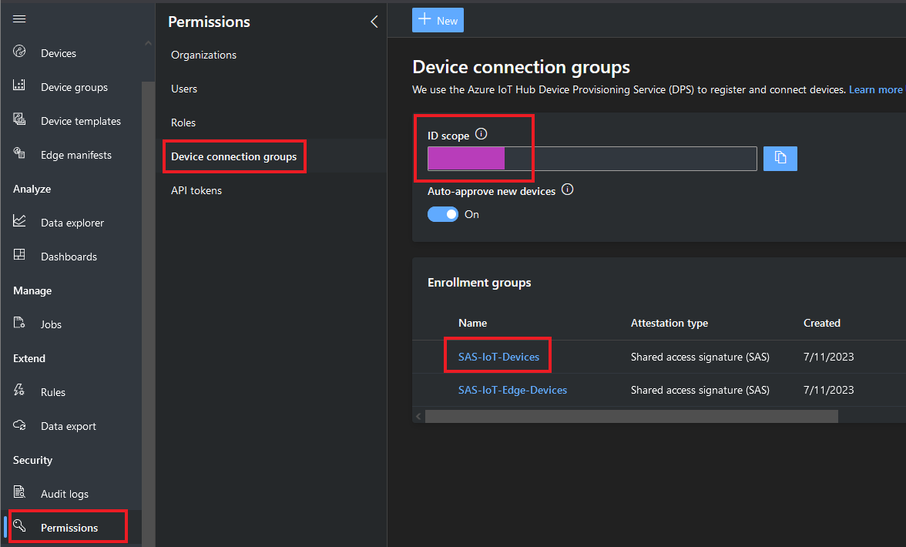
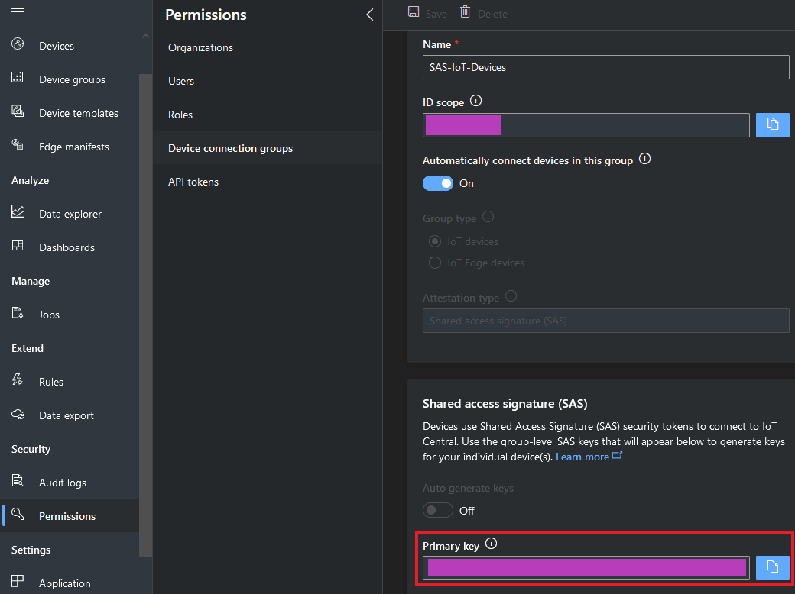

About this document
This document describes how to connect ICS-6280 to Azure IoT Hub using the Azure IoT Explorer with certified device application and device models.
IoT Plug and Play certified device simplifies the process of building devices without custom device code. Using Solution builders can integrated quickly using the certified IoT Plug and Play enabled device based on Azure IoT Central as well as third-party solutions.
This getting started guide provides step by step instruction on getting the device provisioned to Azure IoT Hub using Device Provisioning Service (DPS) and using Azure IoT Explorer to interact with device's capabilities.
ICS-6280 Features:
You should have the following items ready before beginning the process:
For Azure IoT Central
For Azure IoT Hub
Please refer to this tutorial to complete the following procedures :
export IOTHUB_DEVICE_SECURITY_TYPE="DPS"
export IOTHUB_DEVICE_DPS_ID_SCOPE=""
export IOTHUB_DEVICE_DPS_DEVICE_ID=""
export IOTHUB_DEVICE_DPS_DEVICE_KEY=""
export IOTHUB_DEVICE_DPS_ENDPOINT="global.azure-devices-provisioning.net"
export KEYPAD_INTERRUPT="ENABLE"
#If KEYPAD_INTERRUPT set DISABLE, the program will never stop
#If KEYPAD_INTERRUPT set ENABLE, you can stop the program by pressing 'q' key
Create an application
Please refer to this tutorial to create a "Custom application" template.
Create a device template from the device catalog
Please refer to this tutorial to create the ICS-6280 device template.
Add a device
Add a new device under ICS-6280 device template.
Make a note of the device ID.
Get connection information
 
Use the Cloud Shell to generate a device specific key from the group SAS key you just retrieved using the Azure CLI
az extension add --name azure-iot
az iot central device compute-device-key --device-id "sample-device-01" --pk "the group SAS primary key value"
Make a note of the generated device key, and the ID scope for this application and set them to "test.sh".
Please refer to the below link for additional information for Plug and Play